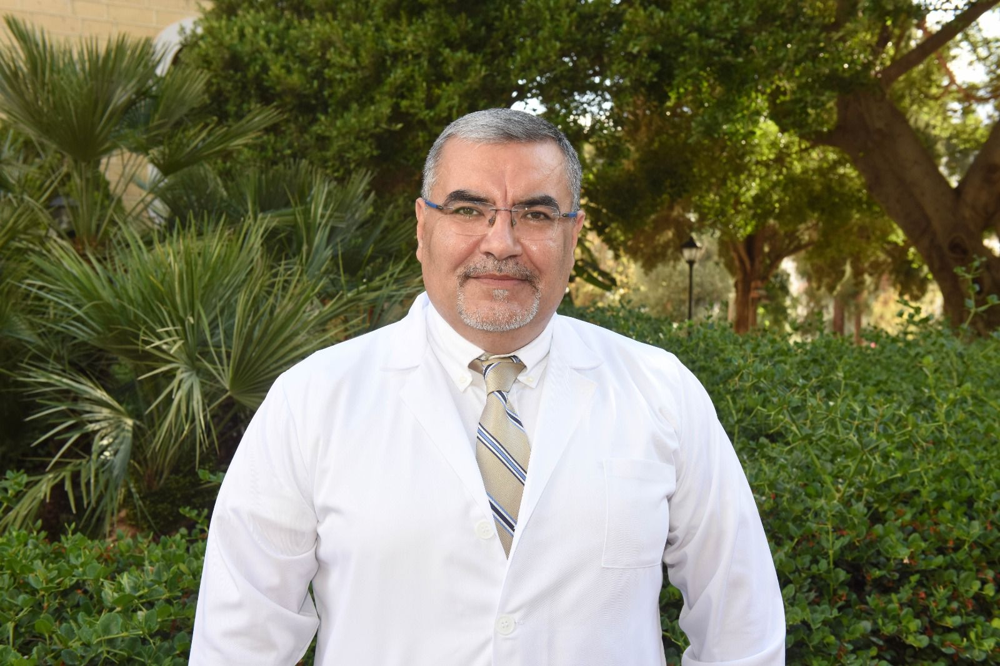
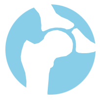
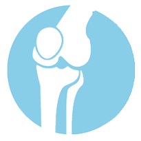

I have hip arthritis
Hip pain, stiffness, limping, trouble with shoes or socks, and difficulty walking may mean the hip joint needs evaluation.
Adult reconstructive surgery in Beirut
Dr. Rida Adel Kassim is an orthopedic surgeon specializing in total hip replacement, total knee replacement, complex hip and knee reconstruction, revision surgery, and infected prosthesis care.

Medical school and orthopedic residency at AUB, followed by adult reconstruction fellowship training in the United States.
Total joint replacement, revision reconstruction, and infected total joint care.
Choose your situation
Patients usually arrive with one of four concerns. Pick the closest situation, then book a consultation with your imaging and reports.
Hip pain, stiffness, limping, trouble with shoes or socks, and difficulty walking may mean the hip joint needs evaluation.
Knee pain with stairs, standing from a chair, swelling, deformity, or reduced walking distance may need treatment planning.
Persistent pain, instability, loosening, wear, or functional decline after a prior implant may require revision assessment.
New pain, wound drainage, fever, swelling, or abnormal blood tests after joint replacement should be reviewed urgently.
When to visit
Leading orthopedic centers explain hip and knee replacement around the same patient signs: persistent pain, stiffness, loss of motion, difficulty walking, trouble climbing stairs, and symptoms that no longer respond well to nonsurgical treatment.
Osteoarthritis can gradually wear away cartilage, causing pain, stiffness, and limited movement.
Patients often seek help when pain affects walking, stairs, getting out of chairs, or daily routines.
Medication, physical therapy, injections, rest, or walking aids may help for a time. Surgery is considered when conservative treatment no longer gives acceptable relief.
Revision surgery may be needed for loosening, wear, instability, infection, or persistent pain after a prior joint replacement.
Your first visit
A strong first visit should clarify the diagnosis, review previous treatment, and decide whether the next step is nonsurgical care, more testing, or surgery.
Specialized care

Hip replacement removes damaged bone and cartilage and replaces the joint with prosthetic components. The goal is to reduce pain, improve movement, and make daily activity easier.

Knee replacement resurfaces damaged joint surfaces with metal and plastic components. It is considered when severe arthritis or injury limits function and other treatments are no longer enough.
Dr. Kassim takes special interest in complex hip and knee reconstruction, including infected total joints. These cases often require detailed planning, staged treatment, and close follow-up.
Patient journey
This section combines Dr. Kassim's original patient instructions with patient-friendly guidance modeled on major orthopedic hospital resources.
Your symptoms, medical history, walking, strength, range of motion, X-rays, and goals are reviewed. The consultation should clarify whether surgery is appropriate now or whether nonsurgical care should continue.
Testing may include bloodwork, urine testing, chest X-ray, EKG, and anesthesia assessment. You may be asked to stop certain medicines before surgery and complete any hospital or insurance requirements before the operation date.
Arrange a walker or cane, a ride home, help with meals and bathing, secure handrails, remove loose rugs, and consider a raised toilet seat or shower chair if recommended.
Hip and knee replacement commonly take around one to two hours, depending on complexity. With fast protocols, most patients stay in the hospital for one day.
Breathing exercises, pain control, antibiotics, anticoagulation, wound care, and physical therapy begin early. Walking usually starts with support from a walker or crutches.
Follow the therapy plan, keep the wound protected, change dressings as instructed, and progress gradually from walker to cane. Recovery varies; many patients need weeks to months to rebuild strength and confidence.
Recovery timeline
Every patient is different, but most people need a structured plan for wound care, walking support, physical therapy, and follow-up.
Pain control, breathing exercises, anticoagulation, wound monitoring, and assisted walking begin early.
Focus on safe walking, swelling control, keeping the wound protected, and following therapy instructions.
Dr. Kassim's original instructions note suture removal around three weeks, depending on healing and wound status.
Many patients continue building strength, balance, range of motion, and confidence with walking.
Safety and recovery
Wound drainage, increasing redness, unusual soreness, significant leg swelling, difficulty breathing, fever, or sudden worsening pain.
Depending on the surgical approach, patients may be told not to cross the legs, bend the hip too far, twist, or sit on low chairs during early recovery.
Low-impact activities are usually preferred after recovery. High-impact activity should be discussed directly with the surgeon.
About Dr. Kassim
Dr. Kassim completed undergraduate studies, medical school training, and orthopedic residency at the American University of Beirut. He then completed a fellowship in adult reconstructive surgery at the University of Minnesota in the United States.
His main interest is complex hip and knee reconstruction with special emphasis on infected total joints.
Frequently Asked Questions
These answers are based on the previous clinic FAQ and have been reorganized into a simpler format.
The decision depends on your pain, mobility, imaging, and response to non-surgical treatment. The Surgery Journey section outlines the usual decision process.
Results vary by diagnosis, age, overall health, and readiness for surgery. These factors are reviewed during consultation before a recommendation is made.
You will be able to walk freely with minimum pain, not pain free.
Six months post-surgery, although hiking is not advisable.
Read our instructions in the Surgery Journey section and follow them.
Yes, you will be taught to do them prior to the surgery.
Yes, it is advisable.
Weight loss is not always required, but it may reduce stress on the joint and support recovery.
Most patients can manage basic transfers and reach the bathroom by discharge, but help at home is still useful.
Avoid slippery floors and footwear, remove loose rugs, and keep essential items within easy reach.
Many patients need help with showering at first. Keep the wound protected from water as instructed and use a chair if recommended.
You may need a walker, a cane, and in some cases a raised toilet seat, especially after hip replacement.
No.
You may need assistance at first, but a small number of steps is often manageable with the right support and instruction.
No, unless requested by your physician.
No, a physiotherapist will be on a scheduled visit.
Risks can include infection, blood clots, wound problems, anesthesia-related complications, and issues related to the implant. These are discussed before surgery.
Stopping smoking and alcohol, following pre-op instructions, bathing as instructed, and doing recommended exercises may help reduce risk.
All significant medical conditions should be reviewed before surgery so the operation can be planned safely.
Auto-transfusion is not routinely used. If blood arrangements are needed, the clinic will tell you what to do in advance.
Surgery is around one hour and 30 minutes for primary surgery and around three hours for revision. As for hospital stay, it is usually one day.
Anesthesia options are discussed with the anesthesiologist before surgery.
Some pain is expected after surgery, but pain control is part of the recovery plan.
Pain is usually managed with medication, early movement, and guidance from the care team.
The second day after the surgery.
Most patients do not need a urinary catheter after surgery unless there is a specific medical reason, such as difficulty urinating afterward.
Yes. Physical therapy starts early as part of the fast recovery protocol.
Hospital treatment may include IV antibiotics, pain control, assisted walking, and monitoring during early recovery.
Most patients stay one day in the hospital with fast protocols.
Most patients leave the hospital able to walk with support. The discharge plan depends on safety, mobility, and transportation needs.
Yes. Anticoagulants and some other medicines may need to be stopped before surgery. Review this with your nurse manager when your case is scheduled.
How to become a patient
Use the current clinic numbers below to schedule a consultation and arrive prepared with your records.
Call AUBMC ext. 5860, call +961 (03) 526-229, send a WhatsApp message to +961 70 684 492, or email rk244@aub.edu.lb.
Clinic hours are Monday and Wednesday 8:00 AM-4:30 PM, and Friday 1:00 PM-5:00 PM.
Bring imaging, prior reports, medication list, medical conditions, and insurance information.
Book an appointment
Clinic venue: American University of Beirut Medical Center, 4th floor, Phase 1, OPD entrance.
AUBMC: +961 (01) 350-000 ext. 5860
Mobile: +961 (03) 526-229
WhatsApp: +961 70 684 492
Email: rk244@aub.edu.lb
LinkedIn: Dr. Rida Kassim
Facebook: Dr. Rida Kassim
4th floor, Phase 1, OPD entrance
+961 (01) 350-000 ext. 5860